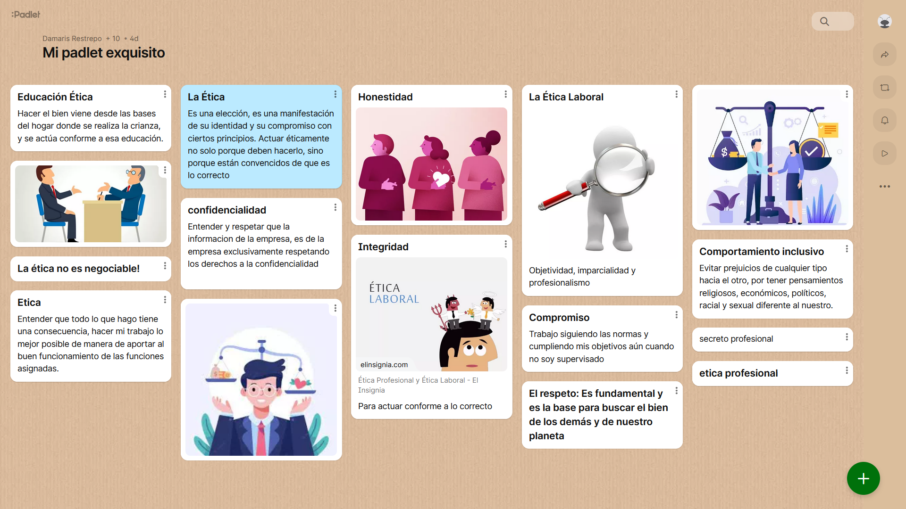

En este portafolio se realizan las reflexiones y los aprendizajes acerca de lo que se va aprendiendo en cada una de las temáticas abordadas en cada encuentro sincronico del curso habilidades blandas que hace parte de la ruta como desarrollador full stack la cual me encuentro realizando, esto permitirá ir fortaleciendo algunas competencias como lo son la comunicación escrita y el pensamiento crítico.
1. Para esta semana les propongo elaborar un esquema donde puedan nombrar las competencias ciudadanas, conceptualizarlas y resaltar la importancia de adquirir dicha competencia (¿Por qué es importante aprenderla y aprehenderla?). Para ello pueden elaborar un mapa conceptual, un mapa mental, un cuadro sinóptico o cualquier otro recurso que le permita llevar a cabo la elaboración del producto solicitado.
Las competencias ciudadanas son el conjunto de conocimientos y habilidades congnitivas, emocionales y comunicativas que nos permiten a todos los seres humanos participar en el desarrollo de una sociedad democrática. Estas capacidades se desarrollan conforme se vaya teniendo una formación ciudadana, no solo en centros de educación.
Las instituciones educativas cumplen un papel importante en cuanto a estas competencias puesto que normalmente es donde los niños ocupan la mayoría de su tiempo. En estas instituciones se ofrecen a los estudiantes las herramientas necesarias para relacionarse con otros seres de manera justa y comprensiva
Las competencias ciudadanas permiten que cada persona contribuya a la sociedad, genera una convivencia pacífica y participa de una manera responsable en los procesos democráticos.
Según el ministerio de educación de Colombia, existen tres grandes grupos de competencias ciudadanas que representan una dimensión fundamental para el ejercicio de los derechos y los deberes de los ciudadanos.
Convivencia y paz: Son aquellas que hacen hincapié en la consideración de los demás y, especialmente, en la consideración de cada persona como ser humano. Algunas situaciones en las que estas competencias son aplicadas:
Doy a conocer mis sentimientos y emociones a través de distintas formas y lenguajes, como gestos, palabras, dibujos, representaciones teatrales, juegos, etc.(Competencias emocionales y comunicativas).
Advierto sobre los riesgos de ignorar señales de tránsito, conducir a alta velocidad o habiendo consumido alcohol y portar armas. Soy consciente de qué medidas tomar para actuar responsablemente si presencio o estoy inmiscuido en un accidente. (Competencia integradora).
Entiendo que se pueden presentar conflictos en los diferentes tipos de relaciones, incluyendo las de pareja, y que es posible manejarlos de forma constructiva utilizando la herramienta de la escucha y comprendiendo los puntos de vista del otro lado. (Competencias cognitivas y comunicativas).
Participación y responsabilidad democrática: Se refieren a aquellas competencias orientadas hacia la toma de decisiones en contextos diferentes. A su vez, toman en consideración que tales decisiones deben respetar, tanto los derechos fundamentales de los individuos, como los acuerdos, las normas, las leyes y la Constitución que rigen la vida de una comunidad. Algunas situaciones en las que estas competencias son aplicadas:
Manifiesto mis ideas, sentimientos e intereses en la escuela y escucho con respeto los de los demás miembros del grupo. (Competencias emocionales y comunicativas).
Ayudo de manera proactiva a lograr metas comunes en el salón de clases y reconozco la importancia que tienen las normas para lograr esos objetivos. (Competencia integradora).
Hago uso mi libertad de expresión y escucho con respeto las opiniones de los demás. (Competencias comunicativas e integradoras).
Pluralidad, identidad y valoración de las diferencias: Se caracterizan por el reconocimiento y el disfrute de las diferencias, al igual que la diversidad humana. Tienen como límite los derechos de los otros. Algunas situaciones en las que estas competencias son aplicadas:
Identifico y respeto la existencia de grupos con diversas características etarias, de etnia, género, oficio, lugar, situación socioeconómica, etc. (Competencias de conocimientos y cognitivas).
Puedo estar consciente de algunas formas de discriminación en mi escuela o en mi comunidad (por etnia, cultura, género, religión, edad, aspectos económicos o sociales, capacidades o limitaciones individuales) y ayudo con decisiones, actividades, normas o acuerdos para evitarlas. (Competencias cognitivas e integradoras).
Evalúo críticamente mis pensamientos y acciones cuando estoy siendo discriminado y puedo establecer si estoy favoreciendo o dificultando esa situación con mis acciones u omisiones. (Competencia cognitiva).
Adicional a lo que hemos visto, el Ministerio de Educación Nacional clasifica las competencias ciudadanas en 5 tipos:
Los conocimientos: tiene que ver con la información que los niños y jóvenes deben saber y comprender en relación con el ejercicio de la ciudadanía.
Las competencias cognitivas: compete a la capacidad para realizar diversos procesos mentales, fundamentales en el ejercicio ciudadano, como la capacidad para colocarse en el lugar del otro, los niveles de análisis crítico y reflexión, así como la identificación de las consecuencias de los actos y decisiones propios.
Las competencias emocionales: están relacionadas con las habilidades necesarias para identificar y responder de manera constructiva las emociones personales que tenemos y las de los demás, como por ejemplo, tener empatía con nuestros interlocutores o quienes nos rodean.
Las competencias comunicativas: se trata de desarrollar capacidades para escuchar con atención los argumentos de los otros y procesarlos debidamente aunque no se compartan, así como construir capacidades para expresarnos adecuadamente sin agredir ni avasallar.
Las competencias integradoras: articulan las anteriores competencias para enfrentar de manera holística los problemas que se puedan presentar a través de la utilización de conocimientos, generación creativa de nuevas ideas, así como competencias emocionales y comunicacionales.
Esta actividad fue desarrollada con base en el artículo competencias ciudadanas: https://www.lifeder.com/competencias-ciudadanas.
1. Para elaborar el portafolio de esta semana, los invito a tomarse un tiempo de descanso al lado de los que aman y a compartir una tarde de película con ellos, para ello los invito a revisar el siguiente recurso PELÍCULAS PARA APRENDER A VALORAR LA DIFERENCIA donde encontrarán una serie de recomendaciones de películas relacionadas con la temática que nos ocupa ésta semana. Elijan una y disfrútenla.
La película que escogí es "Forrest Gump".
2. Posteriormente deben elaborar una reflexión sobre el filme seleccionado realizando un escrito que contenga un breve resumen de la película, un análisis sobre las situaciones que generaron conflictos ante la diferencia y una reflexión personal sobre la empatía y el respeto por los otros y por lo otro.
Resumen: es una película que sigue la vida de Forrest Gump, un hombre con discapacidad intelectual, pero con un corazón puro y una actitud optimista hacia la vida. A pesar de sus desafíos, Forrest vive una vida extraordinaria, siendo testigo y participante en algunos de los momentos más emblemáticos de la historia de Estados Unidos, incluyendo la Guerra de Vietnam, el movimiento por los derechos civiles y el surgimiento de la cultura pop. A través de su recuento retrospectivo de la vida, Forrest narra su historia a diferentes personas que se encuentran en la parada de autobús mientras espera.
Análisis de situaciones que generaron conflicto ante la diferencia: a lo largo de la película, Forrest Gump se encuentra en situaciones en las que su diferencia, tanto en términos de inteligencia como en su visión ingenua del mundo, genera conflictos y malentendidos con aquellos que lo rodean. Las personas a menudo lo subestiman debido a su discapacidad, lo que lleva a ser marginado o maltratado. Sin embargo, a pesar de su aparente limitación, Forrest sorprende a todos con su habilidad para superar desafíos y lograr cosas extraordinarias.
Su amistad con Bubba, un compañero soldado afroamericano durante la Guerra de Vietnam, muestra cómo la diferencia cultural y racial puede superarse con una genuina amistad y camaradería. Forrest no ve a Bubba por su raza, sino como un amigo y hermano, lo que desafía las normas sociales y de la época.
Además, la relación de Forrest con Jenny, su amiga de la infancia y amor de toda la vida, también está marcada por conflictos debido a sus diferencias en la forma de ver el mundo. Jenny lucha con sus propios demonios internos, y su inestabilidad emocional contrasta con la simplicidad y estabilidad emocional de Forrest.
Reflexión personal sobre la empatía y el respeto por los otros y por lo otro: Forrest Gump es una poderosa película que nos invita a reflexionar sobre la empatía y el respeto hacia los demás, independientemente de sus diferencias. A través de la vida de Forrest, aprendemos que la verdadera grandeza reside en la bondad, la sinceridad y la honestidad. A pesar de sus desafíos intelectuales, Forrest demuestra una sabiduría innata al tratar a todos con respeto y amabilidad.
La película nos enseña que la empatía es fundamental para comprender las experiencias de los demás y romper las barreras que separan a las personas. Al adoptar una actitud de apertura y comprensión hacia aquellos que son diferentes, podemos forjar conexiones significativas y contribuir a un mundo más compasivo y tolerante.
La amistad de Forrest con Bubba y su incondicional amor por Jenny son ejemplos claros de cómo la empatía puede superar las diferencias culturales y sociales. Es esencial aprender a ver más allá de las apariencias y reconocer la humanidad que compartimos con todas las personas.
En última instancia, Forrest Gump nos recuerda la importancia de respetar a los demás y valorar las diferencias que hacen que cada individuo sea único. Al practicar la empatía y el respeto por lo otro, podemos enriquecer nuestras vidas y contribuir positivamente a un mundo más inclusivo y compasivo.
1. Para esta semana les propongo realizar una actividad sobre interacción personal que consiste en participar en el foro con un pequeño video sobre quienes somos, a que nos dedicamos y qué servicio podríamos ofrecer (habilidades personales/profesionales). Bien dicen por ahí que lo malo no es no saber sino no tener el contacto del que sabe.
Para ver el vídeo presentación puede hacer click en el siguiente link: https://www.youtube.com/watch?v=-jeBjzidCRQ
1. Para esta semana les propongo que la actividad la realicemos en clase, para ello conformaremos algunos grupos (Según la cantidad de asistentes) y desarrollaremos una serie de construcciones didácticas y creativas con respecto a temáticas de interés que se seleccionen en el grupo. Es importante que tengan en cuenta que, durante la clase dispondremos de un tiempo para la exposición de los trabajos y que estos, deben ser alojados por cada integrante en su portafolio personal.
Cordial saludo queridos estudiantes. Para esta semana elaboramos una infografía y la consignamos en el portafolio con las siguientes reflexiones:
1. Definir el concepto de Liderazgo.
Es la habilidad y capacidad de una persona para influir, guiar y motivar a otros individuos o grupos hacia la consecución de metas y objetivos comunes. Un líder es alguien que es capaz de inspirar y dirigir a los demás, proporcionando una visión clara, estableciendo el rumbo, tomando decisiones y fomentando la colaboración y el trabajo en equipo.
2. Características de un líder.
3. ¿Cómo podemos desarrollar y/o potencializar la competencia de liderazgo? (TIPS)
La infografía puede ser descargada dando click aquí.
Para esta semana los invito a reflexionar sobre los contenidos vistos en clase y sobre los diversos contenidos de ésta lección para elaborar una infografía donde plantees algunos tips para desarrollar una comunicación asertiva y efectiva teniendo en cuenta las siguientes preguntas:
1. Según lo visto en clase y los videos del material complemetario, ¿qué es la Comunicación Asertiva y qué es la comunicación efectiva?
La comunicación asertiva es poder expresar pensamientos, sentimientos y necesidades de manera clara, honesta y respetuosa, al mismo tiempo que se consideran los derechos y sentimientos de los demás.
La comunicación efectiva busca que la persona que emite el mensaje lo realice de forma clara, de forma directa y que no quede lugar a confusiones o malos entendidos, busca que la persona que recibe el mensaje procese la información en términos que pueda entender y dar retroalimentación sobre el mensaje que ha comprendido.
2. ¿Cómo se relaciona la Comunicación Asertiva y la comunicación Efectiva?
Una comunicación asertiva tiende a ser una forma efectiva de comunicarse. Cuando se es asertivo en la comunicación, se transmite el mensaje de manera clara y comprensible, lo que contribuye a la efectividad de la comunicación.
3. ¿Para qué nos sirve la comunicación Efectiva/Asertiva dentro de la Organización?
Entre muchas ventajas que tienen la comunicación efectiva y asertiva tenemos la resolución de conflictos, trabajo en equipo, claridad en metas y objetivos de la empresa o el grupo de trabajo, motivación, toma de decisiones y para mí el más importante que es la prevención de malentendidos.
4. ¿Cómo puedo desarrollar las competencias laborales relacionadas con la comunicación Asertiva/Efectiva?
Lo primero que hay que hacer es tener autoconciencia y autocrítica, hay que comprender el estilo propio de comunicación. Hay que escuchar, tener empatía, control emocional, tomar como hábito la retroalimentación tanto para ti mismo como de parte tuya hacia los demás, buscar modelos a seguir con quien te identifiques, entre otros.
Para elaborar el portafolio de esta semana los invito a resolver las siguientes preguntas:
1. ¿Qué es la capacidad de negociación?
Es una habilidad de las personas para llegar a acuerdos que beneficien a las partes involucradas mediante un proceso de comunicación y discusión.
2. Desde su apreciación personal ¿Por qué es importante desarrollar esta habilidad?
En la vida misma, todos los días se está negociando, incluso con nosotros mismos negociamos. Por eso es importante tener esta habilidad, para sobresalir en todos los ámbitos posibles y también para evitar que personas malintensionadas se aprovechen de la persona por no tener capacidad de negociación.
3. Enumere una serie de habilidades que considera se relacionan o son necesarias para desarrollar la capacidad de negociación (argumenta tu respuesta).
4. ¿Según lo abordado en clase y en los apartados de afianzamiento de conocimientos ¿Cuál es tu estilo de negociación?
Creo que dependiendo el caso sería cualquiera de los 5 estilos vistos pero, en general soy competitivo y comprometido. Aunque ambos estilos pueden contradecirse, la ocasión es la que dictamina qué estilo debería aplicar y a lo largo de mi vida son los que más me representan.
1. Para esta semana los invito a ver el siguiente recurso de BBVA sobre Filosofía para cuestionar el mundo que nos rodea con el Dr. José Carlos Ruiz, filósofo y profesor y realice una reflexión personal sobre el video en relación con la iniciativa y la toma de decisiones. Link del vídeo: https://www.youtube.com/watch?v=u2G5hSsC1UI
Para trabajar un poco sobre las flexibilidad y la adaptación al cambio en términos de los contextos laborales, las habilidades blandas y las entrevistas de trabajo, los invito a responder a las siguientes preguntas en su portafolio:
1. ¿Ha experimentado circunstancias en el último mes que le dificultaron alcanzar sus objetivos? ¿Podría dar ejemplos de la manera en que estas circunstancias lo influyeron negativamente?
Considero que tengo una vida tranquila, no rutinaria pero, sí con mucha tranquilidad y en un estado bueno que me permite tener estabilidad emocional y evitar estas circunstancias que influyen negativamente en los aspectos de mi vida.
2. ¿Alguna vez fue puesto bajo presión con el fin de que cambiara sus planes u opiniones? ¿De qué manera le afectó?
Seguramente en la niñez cuando no entendía muchas cosas pasé por esta situación, no tengo afectaciones por estos casos y hoy en día siendo adulto nunca me he sentido en esa posición.
3. Describa una situación en la que otra persona se negó a hacer lo que usted quería. ¿Qué hizo para lograr que esta persona hiciera lo que usted necesitaba?
En general cuando alguien no hace lo que uno quiere hay que buscar la forma de negociar, persuadir a esa persona y convencerla, escucharla también es importante porque también puede ser el caso en que yo esté errado y se deba hacer lo que esta persona quiere y por ende no hará caso a mis instrucciones.
4. ¿Se adapta fácilmente a los cambios? ¿Podría dar unos pocos ejemplos que ilustren el modo en que usted gestiona el cambio?
La vida siempre te pone en situaciones diferentes; uno de los cambios más grandes por los que he pasado fue cuando pasé del colegio a la universidad, me costó adaptarme pero quería el reto, lo asumí y hoy puedo decir que fue duro pero se logró adaptar.
5. ¿Alguna vez te han pedido que hicieras algo que nunca habías hecho? ¿Cuál fue tu reacción? ¿Qué aprendiste?
Hacer cosas que nunca había hecho siempre traerá beneficios, deja un gran aprendizaje y preferiría estar siempre haciendo cosas nuevas que quedarme estancado haciendo lo mismo siempre.
6. Describe una situación en la que hayas adoptado un nuevo sistema, proceso, tecnología o idea muy diferente de lo habitual.
A lo largo de mis años estudiando ingeniería eléctrica he tenido diferentes materias y profesores, cada uno con un estilo propio de evaluar y enseñar, para saberlos llevar y aprobar las materias he tenido que crear estrategias y métodos que me permitieran concluir de la mejor manera. También cuando comencé en el mundo de la programación y no entendía nada, tuve que buscar un modo de entenderlo y por eso estoy donde estoy hoy.
7. ¿Alguna vez te han pedido que hagas algo que no estaba incluido en la descripción de tu empleo? ¿Cómo has manejado la situación? ¿Cuál fue el resultado?
La verdad no tengo problema en realizar otras labores diferentes a las que se me hayan especificado siempre y cuando no atente contra nadie ni nada y sea recompensado de manera justa.
1. Para esta semana los invito a elaborar una infografía con un "PACTO POR LA VIDA Y EL BIENESTAR" con ustedes mismos. En este sentido para la elaboración del contenido, deben plantear por lo menos 5 actitudes/actividades de autocuidado que se configuren como un pacto con ustedes mismos, para que se cuiden, para que se amen, para que se consientan y para que den un primer paso para mejorar los hábitos de vida saludable.
1. Para esta semana los invito a que juntos construyamos un muro sobre normatividad vigente para nuestro campo de acción desde la Ruta formativa que estamos cursando (Producción Musical/ Desarrollador Full Stack) y en general para nuestro bienestar personal (Salud, educación, empleabilidad y derechos fundamentales). Para ello haremos uso de la herramienta Padlet. Una vez finalizada la actividad, tomar una captura de pantalla y adicionarlo al Portafolio.
Mural realizado en la clase 12.
{kind=link}